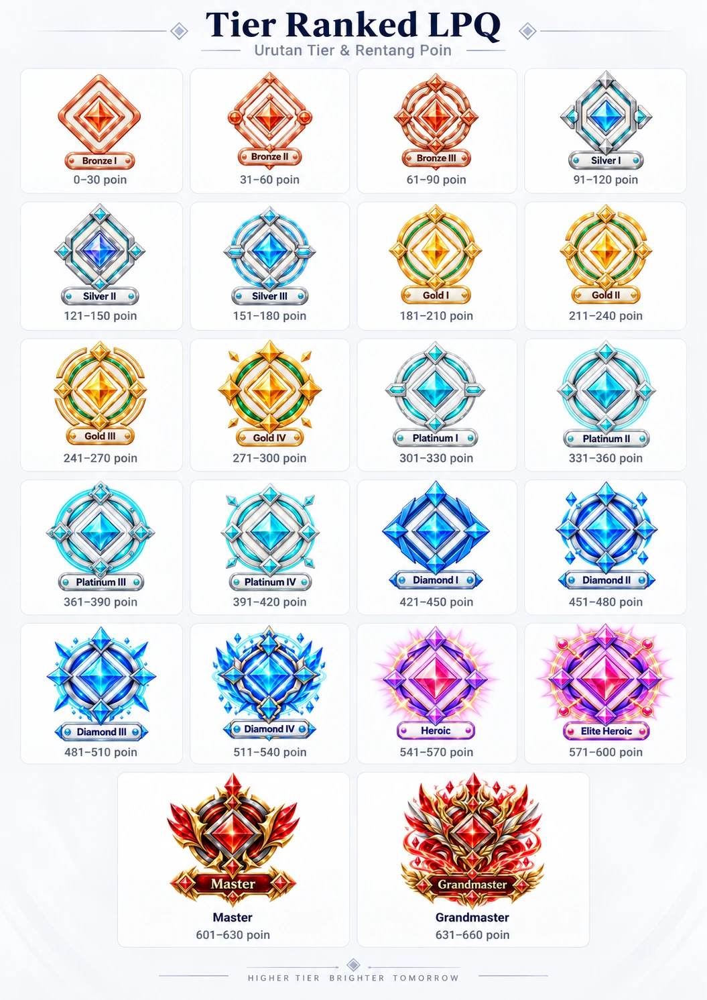

S-O
- Leaderboard per kelas dan peringkat kemajuan bulanan, agar lebih banyak santri bisa tampil.
- Data kehadiran dan setoran sebagai laporan perkembangan untuk wali.
Literasi Digital PAI · Pertemuan 3
Analisis SWOT gamifikasi pembelajaran Al-Qur'an di LPQ Al-Fath Maulana
penetrasi internet nasional
pada Generasi Alfa, anak di bawah 12 tahun
Survei APJII 2025
Anak usia dini yang sudah memakai gadget (BPS 2024)
APJII, Profil Internet Indonesia 2025 (ANTARA News, 6/8/2025) · BPS, Profil Anak Usia Dini 2024 · makalah Bab I A
Rumusan masalah
Apa itu ekosistem digital dan apa saja komponennya?
Bab II A · slide 4–11Tantangan apa yang muncul bagi pendidikan Islam, khususnya pembelajaran Al-Qur'an anak?
Bab II B · slide 12–15Bagaimana gamifikasi dilihat dari teori pendidikan dan ajaran Islam?
Bab II C · slide 16–20Bagaimana penerapannya di LPQ Al-Fath Maulana, dan apa hasil analisis SWOT-nya?
Bab II D–G · slide 21–31Makalah Bab I B, Rumusan Masalah
Bagian satu
Pengertian, komponen, dan cara kerjanya
Biologi
Makhluk hidup dan lingkungannya yang saling bergantung.
Bisnis · James F. Moore, 1993
Jaringan pelaku usaha yang tumbuh, bersaing, dan bekerja sama.
Digital
Jaringan yang menghubungkan manusia, perangkat, platform, data, dan aturan di antara semuanya.
Sebuah aplikasi tidak berdiri sendiri.
Ia hidup bersama algoritma, data tentang anak, dan kebiasaan yang terbentuk setiap hari. Pendidikan Islam perlu membacanya secara utuh (Nata, 2020).
Makalah Bab II A.1 · Moore (1993), Harvard Business Review 71(3)
Internet of Things
Perangkat fisik yang saling terhubung dan bertukar data.
Platform media sosial
Ruang membuat, membagikan, dan mengonsumsi konten.
Algoritma
Aturan yang menentukan konten apa yang muncul berikutnya.
Big data
Kumpulan jejak dari setiap aktivitas digital.
Makalah Bab II A.2, Anatomi Ekosistem Digital
Komponen 1
Perangkat fisik yang saling terhubung dan bertukar data.
Contoh di lembaga pendidikan
Absensi dengan kartu RFID: santri menempelkan kartu, kehadiran langsung tercatat.
Kartunya sendiri tidak terhubung ke internet. Scanner membaca kartu, lalu meneruskan catatannya ke sistem.
Makalah Bab II A.2a · model konektivitas: Internet Society (2015)
Komponen 2
Di sinilah anak menghabiskan sebagian besar waktu layarnya.
Contoh platform dari makalah. Fitur dan aturan tiap layanan berbeda.
Makalah Bab II A.2b
Komponen 3
Aturan pemrograman yang memilih konten selanjutnya. Algoritma rekomendasi dirancang agar pengguna bertahan selama mungkin, misalnya lewat video pendek yang terus mengalir.
Sinyal dan cara pemeringkatan berbeda di tiap platform.
Makalah Bab II A.2c · contoh sinyal: YouTube Help, "How YouTube recommendations work"
Komponen 4
Kami menjaga istilahnya
Rekap data di sebuah lembaga kecil belum tentu layak disebut big data. Arah pemanfaatan bergantung pada pengelolanya.
Makalah Bab II A.2d · pengertian pendukung: IBM, "What is big data?"
Siklus ini berdampak langsung pada perilaku belajar peserta didik.
Terbiasa video berdurasi beberapa detik
bisa jenuh menyimak bacaan guru setengah jam
Terbiasa naik level, badge, dan skor instan
bisa merasa mengaji lambat, tanpa tanda kemajuan
Makalah memakai kata "dapat": kemungkinan yang perlu diwaspadai guru, bukan kepastian untuk setiap anak.
Makalah Bab II A.2
Empat pilar literasi digital · Kominfo, 2021
Delapan elemen esensial · Belshaw, 2014
Bagi guru agama: tahu kapan teknologi perlu dibatasi dan kapan bisa dimanfaatkan.
Makalah Bab II A.2 · Kominfo dan Siberkreasi (2021) · Belshaw (2014)
Bagian dua
Yang dibawa ekosistem digital ke ruang mengaji
Perebutan perhatian
Waktu anak terbatas, pilihan hiburan digital hampir tidak terbatas.
Disrupsi otoritas keagamaan
Rujukan agama anak dan orang tua bergeser ke figur populer di layar.
Akhlak dan adab
Konten yang tidak tersaring ikut membentuk kebiasaan.
Inovasi dan perlindungan data
Setiap inovasi digital membawa risiko baru bagi data anak.
Makalah Bab II B
Tantangan 1 · Perebutan perhatian
Waktu anak
Pilihan hiburan digital
Di lembaga, dampaknya terlihat sebagai
Padahal belajar Al-Qur'an secara talaqqi dan musyafahah menuntut ketekunan dan pengulangan.
Setiadi dkk., 2024
Gadget berlebihan membuat anak mengabaikan kegiatan keagamaan, terutama tanpa pendampingan orang tua.
Marsinah dan Nurhasanah, 2023
Di Bima, kepemilikan gadget berinternet diikuti turunnya minat membaca Al-Qur'an.
UNESCO, 2023
Smartphone mengganggu belajar; kurang dari seperempat negara mengaturnya di sekolah.
Makalah Bab I A dan Bab II B.1
Tantangan 2 · Disrupsi otoritas keagamaan
Kiai, ustaz, dan guru ngaji di lingkungannya
Ceramah, tafsir, bahkan fatwa dari figur populer di media sosial
Latar keilmuannya belum tentu jelas.
Rifdillah dkk. (2024): media baru melahirkan suara-suara baru di luar ulama tradisional.
Al-Aqsha dkk. (2026): ukuran otoritas bergeser dari kedalaman ilmu ke jumlah pengikut dan keterlibatan.
Guru ngaji perlu hadir dekat dengan dunia anak, tanpa kehilangan kedalaman dan keteladanan.
Makalah Bab II B.2 · Rifdillah dkk., Kaganga 7(1) · Al-Aqsha dkk., Mozaic 5(1)
Tantangan 3
Konten yang tidak tersaring dapat membentuk kebiasaan yang bertentangan dengan adab:
Selain lancar membaca, di TPA anak dibiasakan
Tantangan 4
dari 163 produk teknologi pendidikan yang dikaji UNESCO berpotensi memantau anak
negara yang menjamin privasi data pendidikan lewat undang-undang
UU No. 27 Tahun 2022 Pasal 25: data anak diproses secara khusus, dengan persetujuan orang tua atau wali.
PP No. 17 Tahun 2025: tata kelola sistem elektronik dalam pelindungan anak.
Makalah Bab II B.3–B.4 · UNESCO, GEM Report 2023
Bagian tiga
Teori, bukti penelitian, dan pandangan Islam
Definisi Deterding dkk. (2011)
Tiga unsur yang paling sering dipakai: trio PBL · Werbach dan Hunter, 2012
Berbeda dengan pembelajaran berbasis game, yang memainkan game secara utuh.
Makalah Bab II C.1 · Deterding dkk. (2011) · Werbach dan Hunter (2012)
Mendukung
Meta-analisis Sailer dan Homner (2020)
Ukuran efek (Hedges g), bukan persen.
Pengaruh lebih kuat bila ada cerita dan interaksi sosial: kompetisi dipadukan dengan kerja sama.
Saharani dan Ningsih (2025): di kelas tahfiz MTsS Al-Washliyah Medan Krio, motivasi, keterlibatan, dan capaian hafalan meningkat.
Memperingatkan
Hanus dan Fox (2015)
Satu semester memakai badge dan leaderboard. Dibanding kelas tanpa gamifikasi:
Ababil dkk. (2025): kompetisi dapat memicu persaingan tidak sehat bila tidak dirancang cermat.
Makalah Bab II C.2 · Sailer dan Homner, Educ. Psychol. Rev. 32 · Hanus dan Fox, Computers & Education 80
Intrinsik: karena kegiatannya sendiri bermakna atau menyenangkan.
Ekstrinsik: karena ada hasil di luar kegiatan, seperti hadiah atau nilai.
Efek overjustification · Deci, Koestner, dan Ryan, 1999
Hadiah nyata yang dijanjikan sebelumnya dapat melemahkan motivasi intrinsik.
Pujian verbal yang tulus dapat menguatkannya.
"Tujuan akhirnya adalah anak mencintai Al-Qur'an, bukan anak mengumpulkan poin."Makalah, Bab II C.3
Ryan dan Deci (2000), American Psychologist 55(1) · Deci dkk. (1999), Psychological Bulletin 125(6)
Targhib
Dorongan agar peserta didik tertarik kepada kebaikan.
Tarhib
Peringatan yang menyadarkan peserta didik dari kesalahan.
Menurut an-Nahlawi, bedanya dengan sistem ganjaran-hukuman Barat ada pada orientasi: keimanan dan balasan akhirat, bukan semata imbalan duniawi.
فَاسْتَبِقُوا الْخَيْرَاتِ
"Maka berlomba-lombalah kamu dalam kebaikan."
QS. Al-Baqarah [2]: 148
وَفِي ذَٰلِكَ فَلْيَتَنَافَسِ الْمُتَنَافِسُونَ
"Dan untuk yang demikian itu hendaknya orang berlomba-lomba."
QS. Al-Muthaffifin [83]: 26
مَنْ قَرَأَ حَرْفًا مِنْ كِتَابِ اللَّهِ فَلَهُ بِهِ حَسَنَةٌ، وَالْحَسَنَةُ بِعَشْرِ أَمْثَالِهَا
HR. at-Tirmidzi no. 2910
Makalah Bab II C.4 · an-Nahlawi (1995) · Kemenag RI (2019)
إِنَّمَا الْأَعْمَالُ بِالنِّيَّاتِ
"Sesungguhnya setiap amal itu tergantung pada niatnya."
HR. al-Bukhari no. 1
Gamifikasi dapat diterima sebagai targhib modern, dengan dua syarat
Poin dan level adalah sarana, bukan tujuan
Guru terus mengaitkan poin dunia dengan pahala akhirat dan kecintaan kepada Al-Qur'an.
Kompetisi tetap dalam koridor adab
Tidak mengolok-olok kaum lain (QS. Al-Hujurat [49]: 11). Leaderboard bukan alat mempermalukan santri yang tertinggal.
Makalah Bab II C.4
Bagian empat · studi kasus
Ekosistem kecil yang dibangun sendiri oleh lembaga
Profil lembaga · data per 26 September 2026
lpqalfathmaulana.id
Dikembangkan sendiri oleh pengelola · dibangun ulang mulai Juli 2026 · React dan Supabase (PostgreSQL)
Bacaan memakai sistem jilid; kenaikan jilid ditentukan lewat ujian. Salah satu penulis terlibat sebagai pengajar sekaligus pengembang sistem ini.
Makalah Bab I D dan Bab II D.1 · data sistem diakses 26/9/2026
Anatomi yang sama, skala lembaga
"Aturan sistem" di sini menghitung poin. Fungsinya berbeda dari algoritma rekomendasi media sosial.
Makalah Bab II D.2, Tabel 1
Tantangan pengajar
Santri malas datang atau sering terlambat
Sebagian berperilaku kurang baik saat belajar
Keduanya berdampak pada kemajuan bacaan
Kebiasaan yang rutin dan terlihat lebih mudah terbentuk daripada adab yang menuntut kesadaran dan kendali emosi.
Masih gambaran awal
Baru 18–26 santri dinilai per butir. Belum dapat digeneralisasi.
Makalah Bab II D.3, Tabel 2 · diurutkan dari skor tertinggi
Poin kehadiran
Tap kartu RFID. Lebih awal 2, tepat waktu 1, terlambat 0,5 poin.
disiplin waktuTier
22 tingkat, Bronze I sampai Grandmaster; bawaan 30 poin per tingkat.
tanda kemajuan yang seringAcak Nama
Guru mengacak nama: +1, +3, +10 atau −1, −3, −5 poin.
targhib dan tarhibKuis Hafalan
Roda memilih soal hafalan; jawaban dinilai guru.
menguatkan hafalanGatcha Challenge
Jawab pertanyaan lisan; jika benar, acak hadiah poin atau barang.
keberanian tampilLeaderboard
Di layar absensi sejak 20 Agustus 2026; guru melihat per kelas.
fastabiqul khairatMakalah Bab II D.4, Tabel 3 · nilai bawaan sistem
Lebih awal
Tepat waktu
Terlambat
Kenapa diubah?
Aturan lama memberi 1 poin untuk setiap kehadiran, datang jam berapa pun. Tidak ada alasan bagi santri untuk datang tepat waktu.
Makalah Bab II D.4 dan Tabel 3
Catatan kehadiran per bulan
41,7%
Juli
557 / 1.336
18,5%
Agustus
265 / 1.432
17,0%
September*
269 / 1.583
Santri yang pernah terlambat, minimal sekali sebulan
Dibaca hati-hati
Makalah Bab II D.5, Tabel 4 · *sampai 26/9/2026 · persentase kiri dihitung dari jumlah catatan, bukan jumlah santri

Tier menunjukkan akumulasi poin, bukan kualitas bacaan atau jilid.
Makalah Bab II D.5, Tabel 5, tanpa 1 akun dummy uji coba · poster tier dari sistem LPQ · 34 + 43 + 40 + 40 + 24 + 2 = 183
penilaian setoran bacaan dan hafalan, Juli–September 2026
Tingkat kelulusan setoran
santri naik jilid pada ujian kenaikan bulan Agustus 2026
Belum bisa dikaitkan langsung dengan gamifikasi
Kemajuan bacaan dipengaruhi banyak faktor lain. Kelulusan naik di Agustus lalu turun lagi di September, jadi tidak kami sebut tren naik.
Makalah Bab II D.5
Bagian lima · analisis dan strategi
SKekuatan
WKelemahan
OPeluang
TAncaman
Makalah Bab II E, Tabel 6 · butir tebal: yang dibahas makalah sebagai paling utama
S-O
W-O
S-T Prioritas
W-T
Kenapa S-T didahulukan? Tanpa biaya dan tanpa mengubah sistem. Cukup kebiasaan guru, misalnya mengingatkan bahwa setiap huruf yang dibaca bernilai sepuluh kebaikan.
Makalah Bab II F, Tabel 7 · Weihrich (1982) · seluruh strategi berstatus usulan
Catatan kritis
Poin bekerja pada perilaku yang terukur
Datang tepat waktu mudah dihitung. Kekhusyukan, kejujuran, dan cinta Al-Qur'an tidak. Keteladanan guru dan hubungan yang hangat tetap menjadi inti; gamifikasi pelengkap.
Leaderboard perlu dirancang ulang
Tambahkan peringkat per kelas, peringkat kemajuan, atau tantangan kelompok.
Pengurangan poin dipakai dengan bijak
Dalam tarhib, peringatan bertujuan menyadarkan, bukan mempermalukan. Sertai dengan penjelasan dan kesempatan memperbaiki diri.
Data santri adalah amanah
Pembatasan akses per peran sudah ada. Masih perlu persetujuan tertulis wali dan kebijakan berapa lama data disimpan.
Makalah Bab II G
Bagian enam
Kesimpulan dan saran
Ekosistem digital adalah jaringan manusia, perangkat, platform, algoritma, dan data yang saling menguatkan dan memengaruhi perilaku belajar.
Ada empat tantangan bagi pendidikan Islam: perhatian, otoritas keagamaan, akhlak dan adab, serta inovasi yang wajib melindungi data anak.
Gamifikasi dapat diterima sebagai targhib modern selama poin menjadi sarana dan kompetisi tetap beradab.
Di LPQ, catatan terlambat turun dari 41,7% ke 18,5% dan 17,0% setelah aturan poin dibedakan. Temuannya deskriptif, belum sebab-akibat.
Kekuatan utama: keterhubungan data. Ancaman terbesar: pergeseran niat dan keamanan data anak.
Makalah Bab III A
Sertakan pesan keimanan setiap memberi poin. Isi penilaian karakter dan catatan perilaku secara rutin, agar pembinaan akhlak tercatat sebaik kemajuan bacaan.
Susun kebijakan perlindungan data santri: persetujuan wali dan masa simpan data. Lengkapi leaderboard dengan penghargaan yang tidak hanya berdasar total poin.
Pendampingan penggunaan gadget di rumah tetap diperlukan. Sistem di lembaga hanya bekerja baik bila didukung kebiasaan yang sama di rumah.
Gunakan rancangan yang lebih ketat: bandingkan kelas dengan dan tanpa gamifikasi dalam periode lebih panjang, dan ukur motivasi intrinsik santri secara langsung.
Makalah Bab III B
Buku dan dokumen
an-Nahlawi, A. (1995). Pendidikan Islam di Rumah, Sekolah, dan Masyarakat. Gema Insani Press.
Badan Pusat Statistik. (2024). Profil Anak Usia Dini 2024.
Belshaw, D. A. J. (2014). The Essential Elements of Digital Literacies.
Kementerian Agama RI. (2019). Al-Qur'an dan Terjemahannya.
Kominfo dan Siberkreasi. (2021). Modul Literasi Digital.
Nata, A. (2020). Pendidikan Islam di Era Digital. Kencana.
Rangkuti, F. (2006). Analisis SWOT. Gramedia.
UNESCO. (2023). Global Education Monitoring Report 2023.
Werbach, K., dan Hunter, D. (2012). For the Win. Wharton.
Hadis
al-Bukhari, Shahih al-Bukhari, no. 1 · at-Tirmidzi, Sunan at-Tirmidzi, no. 2910.
Artikel jurnal dan prosiding
Ababil dkk. (2025). IJoEd 1(4), 316–322.
Al-Aqsha dkk. (2026). Mozaic 5(1).
Deci, Koestner, dan Ryan. (1999). Psychological Bulletin 125(6), 627–668.
Deterding dkk. (2011). Proceedings MindTrek, 9–15.
Hanus dan Fox. (2015). Computers & Education 80, 152–161.
Ma'rufin. (2015). Risâlah 2(1), 67–77.
Marsinah dan Nurhasanah. (2023). JEMARI 1(1), 1–11.
Moore, J. F. (1993). Harvard Business Review 71(3), 75–86.
Rifdillah dkk. (2024). Kaganga 7(1).
Ryan dan Deci. (2000). American Psychologist 55(1), 68–78.
Saharani dan Ningsih. (2025). EDU SOCIETY 5(1), 287–295.
Sailer dan Homner. (2020). Educational Psychology Review 32, 77–112.
Setiadi dkk. (2024). Muaddib 7(1), 1–11.
Weihrich, H. (1982). Long Range Planning 15(2), 54–66.
Regulasi
UU No. 27 Tahun 2022 tentang Pelindungan Data Pribadi.
PP No. 17 Tahun 2025 tentang Tata Kelola Penyelenggaraan Sistem Elektronik dalam Pelindungan Anak.
Sumber online dan data lembaga
ANTARA News. (6 Agustus 2025). APJII catat penetrasi internet 80,66 persen.
GoodStats Data. Anak di bawah usia 1 tahun sudah gunakan HP (data BPS).
Basis data Sistem Informasi LPQ Al-Fath Maulana. Data agregat Juli–September 2026, diakses 26 September 2026.
Repositori GitHub "LPQ-Al-Fath-Maulana".
Pendukung presentasi
Internet Society (2015) · YouTube Help · IBM, "What is big data?"
Daftar lengkap dengan DOI ada di makalah dan panduan.
Diskusi
Terima kasih